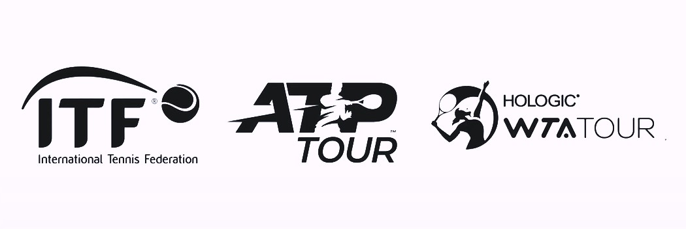
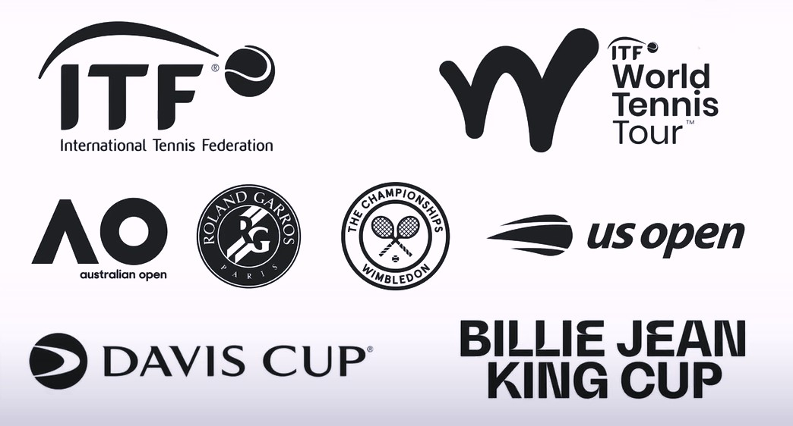
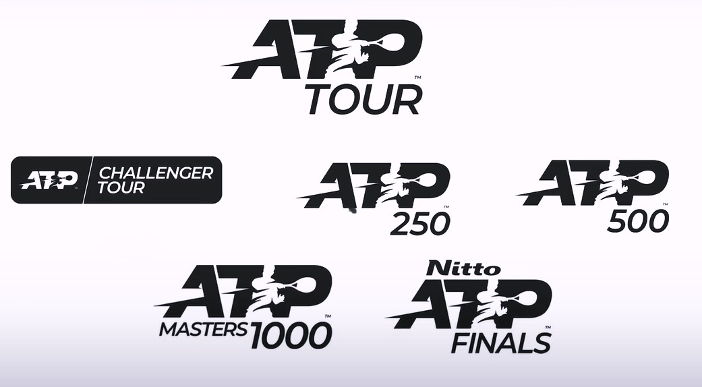
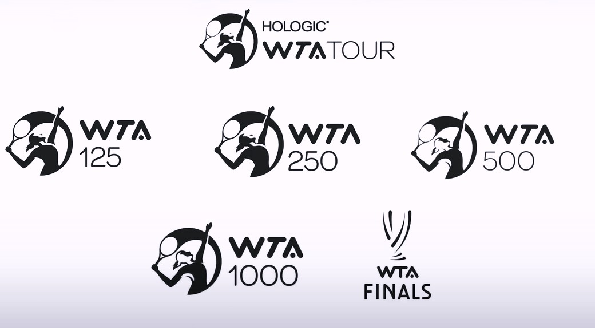
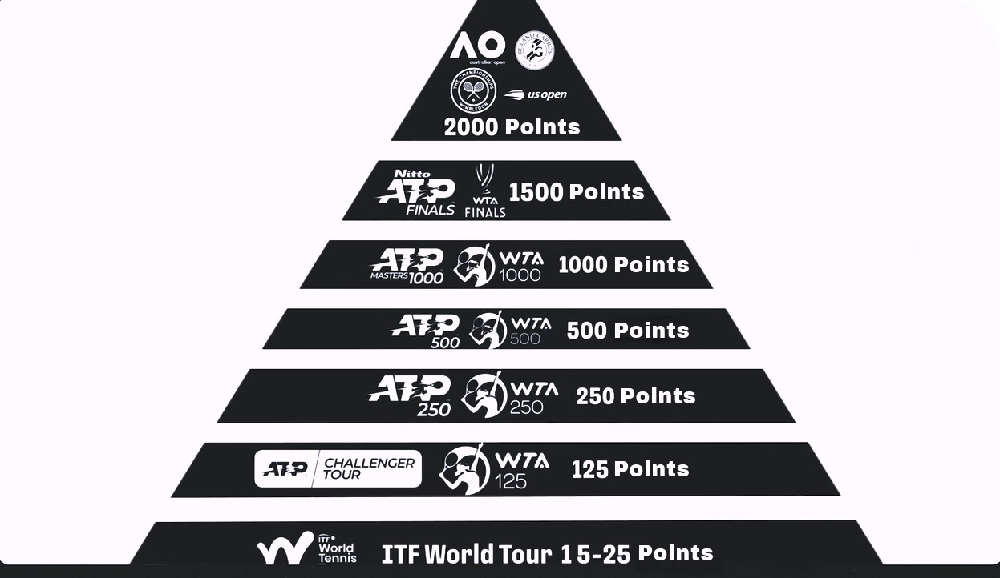
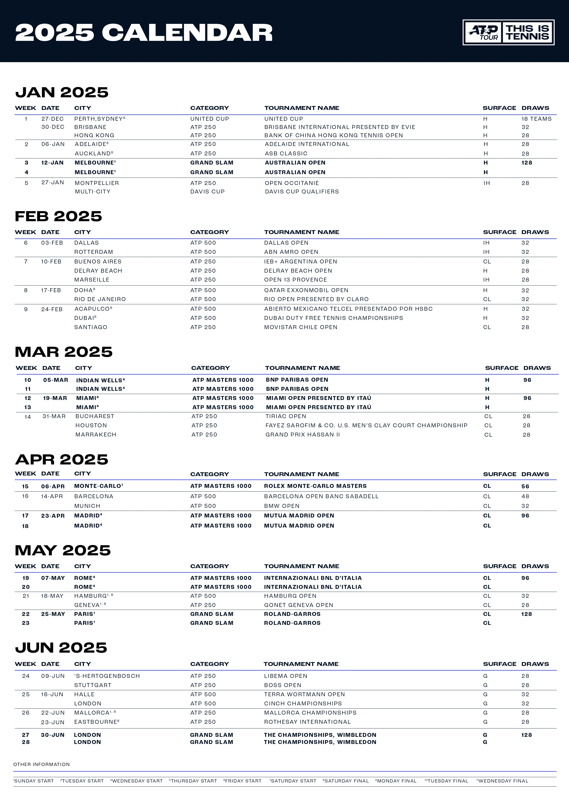
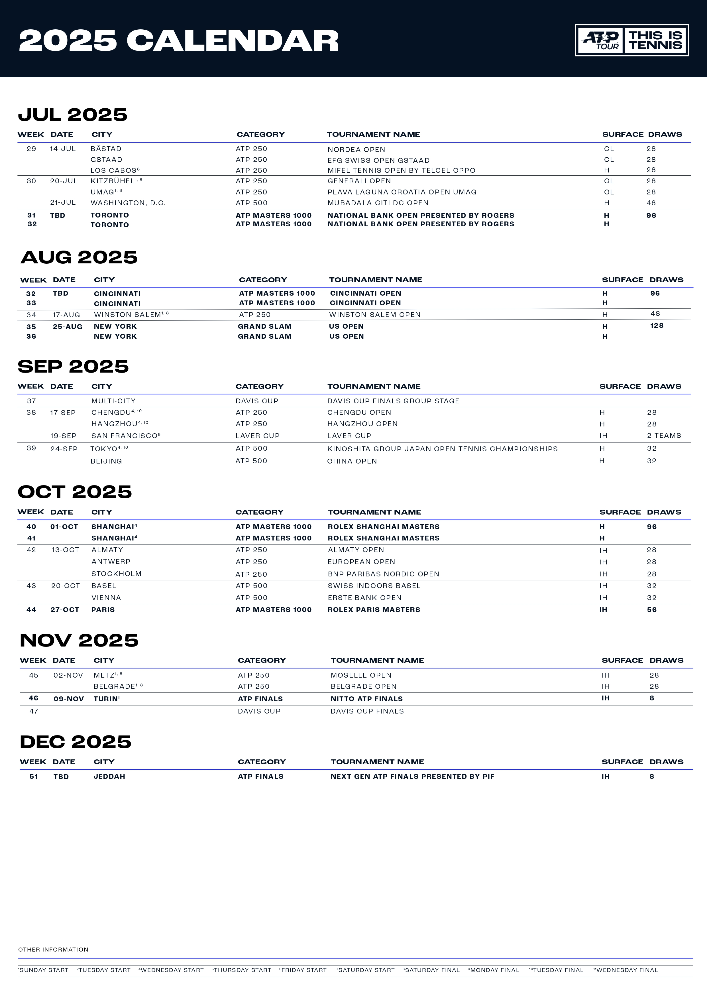
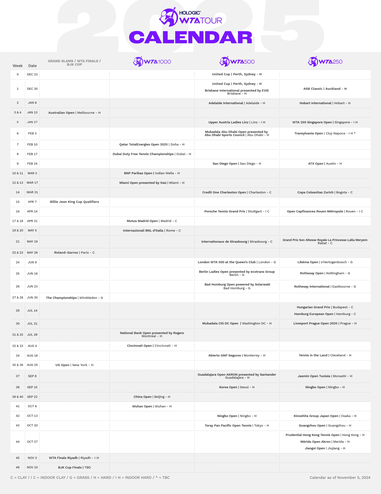

Types of Tennis Tournaments
First, let’s once and for all understand the types of tennis tournaments.
Three major organizations are responsible for conducting tennis
tournaments: the International Tennis Federation (ITF), the
Association of Tennis Professionals (ATP), and the Women’s Tennis Association (WTA).

International Tennis Federation (ITF)
The ITF oversees both the entry-level and top-tier tournaments,
as well as team competitions. Entry-level tournaments include
all events marked as ITF World Tennis Tour. Top-tier tournaments
include the four Grand Slam tournaments: Australian Open, Roland
Garros, Wimbledon, and US Open. Team competitions include the
Davis Cup for men and the Billie Jean King Cup for women, which
was previously called the Federation Cup.

Association of Tennis Professionals (ATP)
The ATP is responsible for organizing and conducting exclusively men’s
tournaments, divided into five categories:
- ATP Challenger Tour or Challenger
- ATP 250
- ATP 500
- ATP Masters 1000, or simply Masters
- Nitto ATP Finals (also known as the year-end finals, held
at the end of the year for the top eight players who earned
the most points during the season).

Women’s Tennis Association (WTA)
The WTA organizes and conducts exclusively women’s tournaments,
also divided into five categories:
- WTA 125
- WTA 250
- WTA 500
- WTA 1000
- WTA Finals

Tennis Ranking System
Next, let’s move on to the ranking system. The number in a tournament’s
category represents the points the winner receives. The more points
up for grabs at a tournament, the more prestigious it is. If we
imagine tournament prestige in a pyramid format, it would look like
this. Naturally, prize money at these tournaments also varies significantly.

The tennis ranking is based on the total points a player has earned over
the past 52 weeks and is updated almost every Monday. It is calculated
based on the results of 18 tournaments for men and 16 tournaments for
women. Players don’t have the option to freely choose all 18 or 16 tournaments
for their rankings. The mandatory events include:
- All four Grand Slam tournaments
- All Masters 1000 tournaments
- Four ATP 500 tournaments
The rest are at the player’s discretion. It’s also worth noting
that the Monte Carlo Masters, despite being a Masters 1000 event,
is not mandatory for men.
Point Defense in Tennis Rankings
However, the most interesting aspect of tennis rankings is point defense.
For example, if someone won Wimbledon and earned 2,000 points but lost
in the first round the following year, earning only 10 points, how would
that affect their ranking? This would result in a loss of 1,990 points.
Similarly, if they won again, they would “defend the title” and retain
their 2,000 points. That’s why tennis commentators often mention how many
points a player needs to “defend” during any given tournament.
Tennis Calendar
With tournaments and the ranking system covered, let’s now
understand how the tennis calendar works.
The tennis calendar spans 48 weeks and has six key points on the map:
Australia
This is where the tennis season begins. The United Cup and two weeks
of tournaments in Adelaide help players adapt to the hot and humid
climate before playing the first Grand Slam of the year — the Australian
Open — in mid-January.
USA
After Australia, players gradually transition in February to prestigious
tournaments in Dubai and Doha in the Middle East. Some compete in
Latin America in Acapulco. By early March, they move to the USA,
where the tennis world focuses on the so-called “Sunshine Double” —
the Masters 1000 tournaments in Indian Wells and Miami.
Europe (Clay)
After three months of playing on hard courts, players move to Europe
and begin the clay season. From April to May, the clay court season
is dominated by Masters 1000 tournaments in Monte Carlo, Madrid,
and Rome, culminating in the second Grand Slam of the year — Roland Garros.
Europe (Grass)
Immediately after the French Open, players face the technically
challenging transition to grass courts. From June to July, on the
green courts of Germany, the Netherlands, Spain, and England, the
fastest tennis is played, with the highlight being the third
Grand Slam of the year — Wimbledon.
USA
As the final Grand Slam approaches in August and September, players
return to North America. They compete in two Masters 1000 tournaments
in Canada and Cincinnati before battling for victory at the US Open in New York.
Eurasia (Indoor Courts) and Latin America
October and November often mark the final stretch of the race for the
world’s top ranking. On indoor courts in Asia and Europe, players try
to earn a few more points to secure a spot at the Year-End Finals among
the top eight and compete for substantial prize money.
Some players end their season here, while others continue with events
like the Davis Cup or exhibition matches. One way or another, tennis
offers just four weeks of rest before it’s time to return to the court
and embark on another global pursuit of points, titles, prize money,
and new records.


